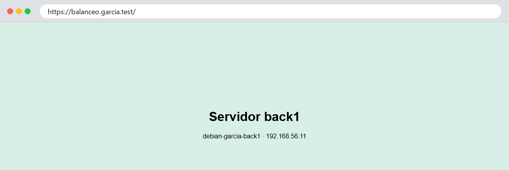
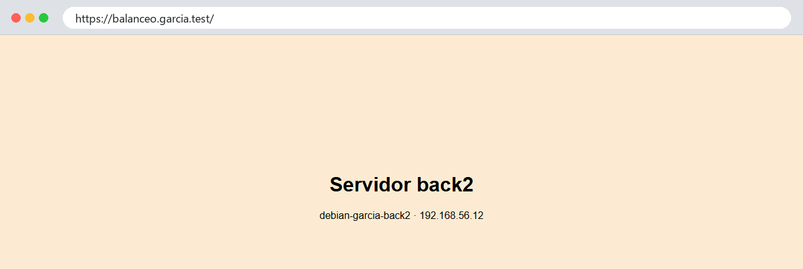

Práctica 2.5 - Balanceo de carga con Nginx¶
Cuándo se hace
En el bloque 4 de la teoría del Tema 2, con la práctica 2.4 terminada. Es la última práctica del tema.
Objetivos
Al terminar esta práctica deberás ser capaz de:
- Añadir un segundo servidor de detrás clonando el primero.
- Configurar Nginx para que reparta las peticiones entre varios servidores.
- Servir el balanceador por HTTPS, con redirección desde HTTP.
- Comprobar qué pasa cuando cae uno de los servidores.
- Conocer otros métodos de reparto y cuándo usar cada uno.
1. Proxy inverso y balanceador¶
En la práctica 2.4, tu máquina principal reenviaba todo a un servidor. Un balanceador de carga es un proxy inverso que reparte entre varios:
┌──────► back1 192.168.56.11
Tu ordenador ──────► balanceador
192.168.56.1 192.168.56.10
└──────► back2 192.168.56.12
Se usa por dos motivos:
- Capacidad: si un servidor no da abasto, se ponen varios y se reparte el trabajo.
- Disponibilidad: si uno se cae, los demás siguen atendiendo. Ningún servidor es imprescindible por sí solo.
2. Crear back2¶
back2 será una copia de back1, que ya tiene Nginx, la IP real y la restricción para que solo acepte al proxy. Lo harás como en la práctica 2.4, con una diferencia: ahora el original es back1.
- Apaga
back1. El clon arrancará con su IP,.11. - En VirtualBox, clic derecho sobre
back1→ Clone: nombredebian-tuapellido-back2, Generate new MAC addresses for all network adapters y Linked Clone. VirtualBox te ofrecerá crear antes una instantánea deback1: acepta. - Arranca solo
back2, conéctate a la.11y cámbiale:- el nombre, a
debian-tuapellido-back2(los dos comandos de siempre), - la IP en
/etc/network/interfaces, a192.168.56.12, - las claves de host SSH (
rmydpkg-reconfigure, como en la 2.4), - la página
/var/www/html/index.html: que diga back2 y su IP, y cambia el color de fondo (por ejemplo,#fcebd2) para distinguirla de un vistazo.
- el nombre, a
- Reinicia
back2y arrancaback1y la principal.
Comprueba la huella nueva de back2 la primera vez que entres en la .12.
3. Configurar el balanceador¶
En la principal, crea primero un certificado para el nombre nuevo, como en la práctica 2.2:
sudo openssl req -x509 -newkey rsa:2048 -nodes -days 365 \
-keyout /etc/nginx/ssl/balanceo.garcia.test.key \
-out /etc/nginx/ssl/balanceo.garcia.test.crt \
-subj "/C=ES/O=2DAW/OU=Despliegue - Garcia/CN=balanceo.garcia.test" \
-addext "subjectAltName=DNS:balanceo.garcia.test"
Y crea el sitio:
upstream backends { # (1)!
zone backends 64k; # (2)!
server 192.168.56.11;
server 192.168.56.12;
}
server {
listen 80;
listen [::]:80;
server_name balanceo.garcia.test;
access_log /var/log/nginx/balanceo.access.log;
return 301 https://$host$request_uri;
}
server {
listen 443 ssl;
listen [::]:443 ssl;
http2 on;
server_name balanceo.garcia.test;
ssl_certificate /etc/nginx/ssl/balanceo.garcia.test.crt;
ssl_certificate_key /etc/nginx/ssl/balanceo.garcia.test.key;
access_log /var/log/nginx/balanceo.access.log;
error_log /var/log/nginx/balanceo.error.log;
location / {
proxy_pass http://backends; # (3)!
proxy_set_header Host $host;
proxy_set_header X-Real-IP $remote_addr;
proxy_set_header X-Forwarded-For $proxy_add_x_forwarded_for;
proxy_set_header X-Forwarded-Proto $scheme;
proxy_connect_timeout 2s; # (4)!
add_header X-Upstream $upstream_addr always; # (5)!
}
}
- El grupo de servidores entre los que se reparte. Se le da un nombre,
backends, que es el que se usa después enproxy_pass. - Una zona de memoria compartida para el grupo. Nginx tiene varios procesos trabajadores (lo viste en la teoría) y, sin esta línea, cada uno lleva su propio turno: el reparto deja de alternar de forma ordenada.
- En lugar de una IP, el nombre del grupo.
- Si un servidor no acepta la conexión en 2 segundos, se da por caído y se prueba el siguiente. Por defecto son 60.
- Una cabecera que dice qué servidor de detrás ha atendido la petición.
alwayshace que se añada también en las respuestas de error.
Fíjate en que el certificado y el HTTPS están solo en el balanceador: entre él y los servidores de detrás, el tráfico va por HTTP. Es lo habitual. El balanceador descifra una vez, y los de detrás no gastan recursos en TLS. Esa red interna no la ve nadie de fuera, y back1 y back2 solo aceptan conexiones del proxy.
Activa el sitio, comprueba la configuración, recarga y añade balanceo.garcia.test a tu fichero hosts, apuntando a la .10.
4. Ver el reparto¶
En el navegador, entra en https://balanceo.garcia.test, acepta el aviso del certificado y recarga varias veces con Ctrl+F5: la página alterna entre la verde de back1 y la naranja de back2.


¿Siempre la misma página?
Puede pasarte que el navegador muestre siempre el mismo servidor. Es porque, además de la página, pide el icono de la pestaña (/favicon.ico), y esa segunda petición se lleva el turno del otro servidor: página a back1, icono a back2, página a back1… Para ver el reparto de verdad, usa curl.
Con curl se ve mejor. En PowerShell, seis peticiones seguidas:
X-Upstream: 192.168.56.11:80
X-Upstream: 192.168.56.12:80
X-Upstream: 192.168.56.11:80
X-Upstream: 192.168.56.12:80
X-Upstream: 192.168.56.11:80
X-Upstream: 192.168.56.12:80
Una para cada uno, por turnos. Es el método por defecto, el reparto por turnos (round robin).
Repartir con pesos¶
Si back1 fuera un servidor el triple de potente que back2, convendría mandarle el triple de trabajo. Cámbialo en el upstream:
Recarga y repite, esta vez con ocho peticiones (1..8):
X-Upstream: 192.168.56.11:80
X-Upstream: 192.168.56.11:80
X-Upstream: 192.168.56.12:80
X-Upstream: 192.168.56.11:80
X-Upstream: 192.168.56.11:80
X-Upstream: 192.168.56.11:80
X-Upstream: 192.168.56.12:80
X-Upstream: 192.168.56.11:80
Ahora, de cada cuatro peticiones, tres van a back1. Quita el weight=3 al terminar.
5. Cuando cae un servidor¶
Nginx parado¶
En back1, para Nginx (sudo systemctl stop nginx) y repite las seis peticiones:
X-Upstream: 192.168.56.11:80, 192.168.56.12:80
X-Upstream: 192.168.56.11:80, 192.168.56.12:80
X-Upstream: 192.168.56.12:80
X-Upstream: 192.168.56.12:80
X-Upstream: 192.168.56.12:80
X-Upstream: 192.168.56.12:80
Todas las respondió back2, y ninguna dio error. Fíjate en las dos primeras: dicen 192.168.56.11:80, 192.168.56.12:80 porque el balanceador lo intentó primero con back1, que rechazó la conexión, y la reintentó en back2. Después marca back1 como caído durante unos segundos y ya ni lo intenta. El usuario no se entera de nada. En el registro de errores del balanceador sí queda constancia:
2026/10/05 00:14:59 [error] 1160#1160: *67 connect() failed (111: Connection refused) while connecting to upstream, client: 192.168.56.1, server: balanceo.garcia.test, request: "HEAD / HTTP/1.1", upstream: "http://192.168.56.11:80/", host: "balanceo.garcia.test"
Vuelve a arrancar Nginx en back1 y comprueba que vuelve a entrar en el reparto.
Máquina apagada¶
Ahora apaga la máquina back2 entera (sudo poweroff) y mide cuánto tarda cada petición:
1..4 | ForEach-Object { curl.exe -sk -o NUL -w "%{http_code} %{time_total}s
" https://balanceo.garcia.test }
Todas responden 200, pero la que le toque a back2 la primera vez tarda unos 2 segundos: con la máquina apagada nadie rechaza la conexión, y el balanceador espera a que pase el proxy_connect_timeout antes de probar con back1. Las siguientes ya son inmediatas, porque back2 ha quedado marcado como caído.
Pruébalo
Comenta la línea proxy_connect_timeout, recarga y repite. En tu laboratorio la espera sube a unos 3 segundos, no a los 60 del valor por defecto: como back2 está en tu misma red, el sistema descubre enseguida que no hay nadie en esa IP (No route to host). Los 60 segundos los esperaría con un servidor lejano que no contesta, por ejemplo detrás de un cortafuegos que descarta los paquetes. Vuelve a dejar la línea como estaba.
Sin nadie detrás¶
Con back2 todavía apagada, para Nginx en back1 y haz varias peticiones seguidas:
La primera da 504 Gateway Time-out: el balanceador lo intentó con los dos, y el último, back2, no contestó a tiempo. Las siguientes dan 502 Bad Gateway al instante, porque ya los tiene a los dos marcados como caídos y ni siquiera lo intenta. El registro de errores lo dice así:
[error] 1364#1364: *138 no live upstreams while connecting to upstream, client: 192.168.56.1, server: balanceo.garcia.test, request: "HEAD / HTTP/1.1", upstream: "http://backends/", host: "balanceo.garcia.test"
Arranca de nuevo Nginx en back1 y enciende back2.
6. Haz las instantáneas¶
Apaga las tres máquinas y toma las instantáneas p2.5-balanceo en la principal y back2-listo en back2.
Cuestiones finales¶
Cuestión 1
Además del reparto por turnos, Nginx tiene least_conn, ip_hash y random. Explica cómo reparte cada uno y pon un caso en el que convenga cada uno.
Cuestión 2
Una tienda online guarda el carrito en la memoria del servidor que atiende al usuario. Con reparto por turnos, ¿qué le pasaría al carrito? ¿Qué método de la cuestión anterior lo evita, y qué problema tiene?
Cuestión 3
Quieres añadir un tercer servidor de detrás, back3. Enumera todo lo que tendrías que hacer, en las máquinas y en la configuración.
Cuestión 4
El certificado solo está en el balanceador y el tráfico hacia back1 y back2 va por HTTP. ¿Por qué es aceptable aquí? ¿En qué caso no lo sería?
Cuestión 5
¿Qué diferencia has visto entre parar Nginx en un servidor y apagar la máquina? ¿Por qué la primera petición tarda más en el segundo caso? Explica también la diferencia entre el 504 y el 502 que viste al dejar el balanceador sin servidores.
Entrega¶
Igual que en las prácticas anteriores: documento de evidencias (40 %) y demostración en clase (60 %).
Parte 1 — Documento de evidencias (40 %)¶
Un PDF llamado P2.5-Apellido-Nombre.pdf con portada, las evidencias (en texto, con comando y prompt) y las respuestas a las cuestiones.
| # | Qué hay que demostrar | Dónde | Comando cuya salida se pega |
|---|---|---|---|
| 1 | back2 tiene su propio nombre, IP y huella |
back2 |
hostnamectl, ip -br a y ssh-keygen -lf /etc/ssh/ssh_host_ed25519_key.pub |
| 2 | La configuración del balanceador | Principal | cat /etc/nginx/sites-available/balanceo.tuapellido.test |
| 3 | La configuración es correcta | Principal | sudo nginx -t |
| 4 | HTTP redirige a HTTPS | Tu ordenador | curl.exe -I http://balanceo.tuapellido.test |
| 5 | El reparto por turnos | Tu ordenador | Las seis peticiones del apartado 4 |
| 6 | El reparto con pesos | Tu ordenador | Las seis peticiones con weight=3 |
| 7 | La caída de un servidor sin errores | Tu ordenador y principal | Las seis peticiones con Nginx parado en back1, y las últimas líneas de balanceo.error.log |
| 8 | El 504 y el 502 cuando caen los dos |
Tu ordenador y principal | Las peticiones del apartado 5 y la línea no live upstreams de balanceo.error.log |
| 9 | Las dos páginas en el navegador | Tu ordenador | Captura de cada una, con la barra de direcciones |
Parte 2 — Demostración en clase (60 %)¶
Mini entrevista individual en la mesa del profesor, con las tres máquinas encendidas: muestras el reparto en el navegador, haces la tarea que se te pida (por ejemplo, apagar un servidor y explicar qué pasa) y explicas una decisión o un concepto.
Criterios de evaluación¶
| Parte | Criterio | Peso |
|---|---|---|
| Documento | Las nueve evidencias están completas, en texto (salvo las capturas) y explicadas | 25 % |
| Documento | Las cinco cuestiones están respondidas con corrección y criterio propio | 15 % |
| Demostración | El balanceador reparte por HTTPS entre back1 y back2, y sigue funcionando si cae uno |
20 % |
| Demostración | Realizas la tarea que se te pide y explicas lo que haces | 20 % |
| Demostración | Explicas una decisión o un concepto con tus palabras | 20 % |
Antes de entregar, comprueba que…¶
- ☐
back2se llamadebian-tuapellido-back2, tiene la IP.12, 512 MB y su propia huella SSH. - ☐
https://balanceo.tuapellido.testalterna entre las dos páginas, yhttp://redirige. - ☐ Si paras Nginx en uno de los dos, el otro atiende todas las peticiones sin errores.
- ☐
back1yback2siguen sin aceptar conexiones directas desde tu ordenador. - ☐ Existen las instantáneas
p2.5-balanceoyback2-listo. - ☐ El archivo se llama
P2.5-Apellido-Nombre.pdf.